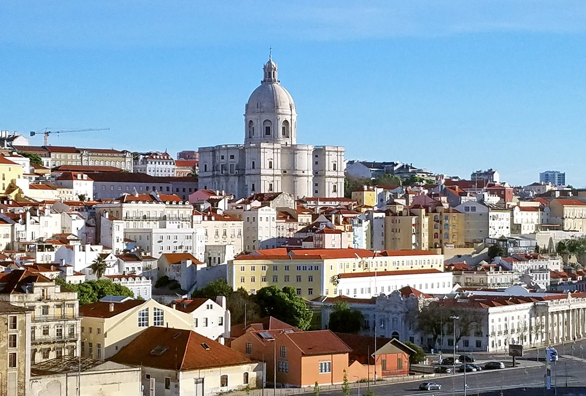

Introduction
Following its heyday as a global maritime power during the 15th and 16th centuries, Portugal lost much of its wealth and status with the destruction of Lisbon in a 1755 earthquake, occupation during the Napoleonic Wars, and the independence of Brazil, its wealthiest colony, in 1822.
A 1910 revolution deposed the monarchy, and for most of the next six decades, repressive governments ran the country. In 1974, a left-wing military coup installed broad democratic reforms. The following year, Portugal granted independence to all of its African colonies. Portugal is a founding member of NATO and entered the EC (now the EU) in 1986.
Geography
Location
Southwestern Europe, bordering the North Atlantic Ocean, west of Spain.

Climate
Maritime temperate; cool and rainy in north, warmer and drier in south.
Terrain
The west-flowing Tagus River divides the country: the north is mountainous toward the interior, while the south is characterized by rolling plains.
People and Society
Population
10,263,850 (July 2021 est.)
Ethnic Groups
White homogeneous Mediterranean population; citizens of African descent who immigrated to mainland during decolonization number less than 100,000; since 1990, Eastern Europeans have migrated to Portugal.
Religion
- Roman Cahholic = 83%
- Christian = 3.3%
- not specififed = .06%
- other/none = 15.1%
Government
Government Type
Semi-presidential republic
Independence
The Kingdom of Portugal was recognized in 1143. It was 1 December 1640 that independence reestablished following 60 years of Spanish rule. On the 5th of October 1910 the republic was proclaimed.
Legal System
Civil law system; Constitutional Court review of legislative acts.